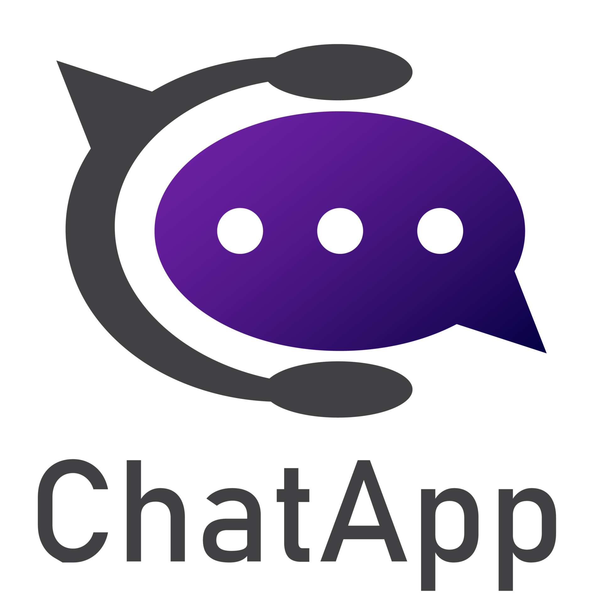

<div class="sidebar">
  <div class="flex-column align-items-stretch flex-shrink-0" style="background-color: #bfa7ef"
    *ngIf="!showSearchResults">
    <a class="d-flex align-items-center flex-shrink-0 p-3 link-dark text-decoration-none border-bottom">
      
      &nbsp;&nbsp;
      <div class="head">
        <span class="fs-5 fw-semibold header" style="cursor: pointer">Minimal Chat</span>

      </div>
    </a>

    <div *ngIf="connectedUsersName.length > 0">
      <h2 class="user-status">Online : {{ (connectedUsers) }}</h2>
      <ul>
        <li *ngFor="let user of connectedUsersName">
          <div class="profile">
            <div class="user-image-status">
              <span>{{ user.charAt(0) }}</span>
            </div>
          </div>
          <div class="row">
            <strong class="mb-1" style="margin-top: 3px;" >{{ user}}</strong>

          </div>

      </ul>
    </div>


    <div *ngFor="let user of users" class="list-group list-group-flush border-bottom scrollarea">
      <a class="list-group-item list-group-item-action py-3 lh-tight" aria-current="true"
        [routerLink]="'user/' + user.id">
        <div class="d-flex w-100 align-items-center">
          <div class="profile">
            <div class="user-image">
              <span>{{ user.name.charAt(0) }}</span>
            </div>
          </div>
          <div class="row">
            <strong class="mb-1">{{ user.name }}</strong>
            <small>{{ user.email }}</small>
            <span *ngIf="userStatus[user.id]" class="online-status">Online</span>
            <span *ngIf="!userStatus[user.id]" class="offline-status">Offline</span>
            <span *ngIf="lastSeenTimestamps[user.name]" class="last-seen">
              Last seen: {{ lastSeenTimestamps[user.name] | date: 'shortTime' }}
            </span>
            <span *ngIf="!lastSeenTimestamps[user.name]" class="last-seen">
              Last seen:  A while ago
            </span>
            <span *ngIf="user.lastSeen" class="last-seen">Last seen: {{ user.lastSeen | date }}</span>
          </div>
          <div *ngIf="getUnReadMessageCount(user.id) > 0">
            <div class="pt-1">
              <span  class="badge bg-danger rounded-pill float-end">
                {{getUnReadMessageCount(user.id)}}
            </span>
            
            </div>
          </div>
        </div>
      </a>
    </div>
  </div>

  <div class="flex-column align-items-stretch flex-shrink-0" style="background-color: #bfa7ef" *ngIf="showSearchResults"
    class="search-results">
    <!-- Close Button to Revert Back -->
    <button class="close-button" (click)="closeSearchResults()"> <i class="fas fa-times"></i></button>
    <!-- Search Results Content -->

    <div *ngFor="let result of searchResults" class="search-result-item">
      <!-- Display search results here -->

      <div *ngIf="searchResults.length > 0">

        <div [ngClass]="{
                 'incoming': result?.receiverId !== receiverId,
                 ' outgoing': result?.receiverId === receiverId
                }">

          {{result.content}}

        </div>
      </div>
      
    </div>
    <div *ngIf="searchResults.length === 0" class="no-results-message">
      No search results found.
    </div>

  </div>
</div>
<div>

  <router-outlet></router-outlet>

</div>
